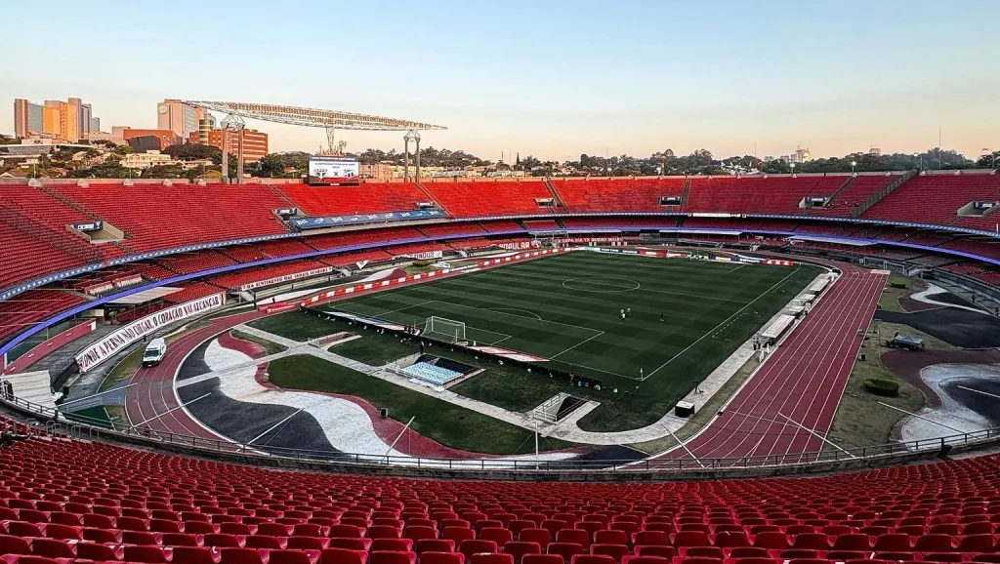

Reportagem
Nossa História
Conheça a trajetória vitoriosa do Clube da Fé.

Como Tudo Começou
O São Paulo Futebol Clube foi fundado originalmente em 1930 e refundado em 1935. Ficou mundialmente conhecido como o "Clube da Fé" devido à sua capacidade de superação em momentos difíceis.
“Bicampeão da Libertadores e do Mundial, vencendo gigantes como Barcelona e Milan.”
A Era Dourada de Telê Santana
Nos anos 90, sob o comando do mestre Telê Santana, o São Paulo dominou o futebol sul-americano e mundial, conquistando o bicampeonato da Libertadores e do Mundial Interclubes em 1992 e 1993, vencendo gigantes como Barcelona e Milan.